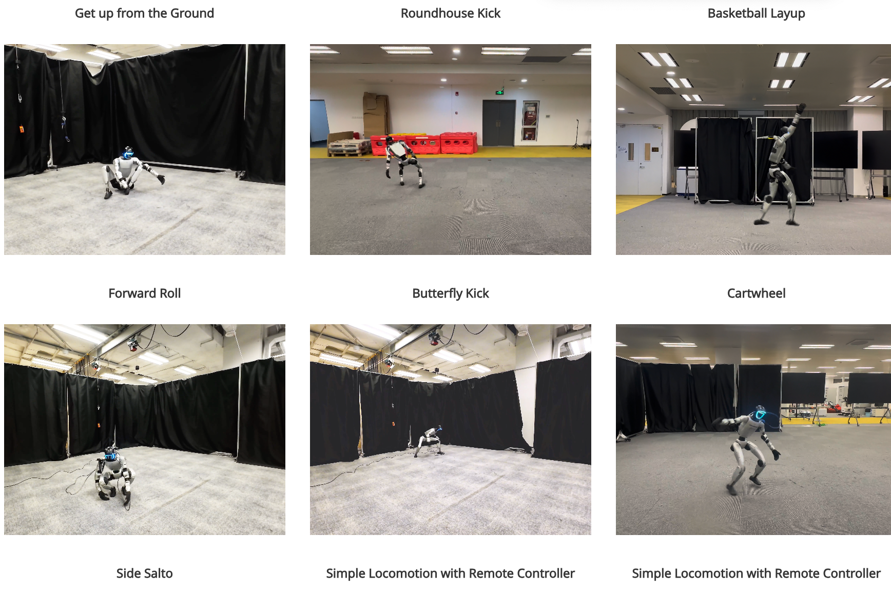
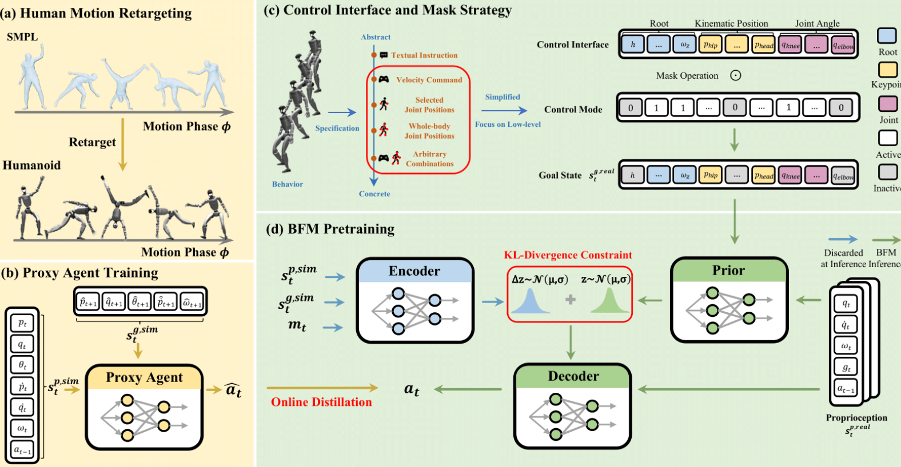
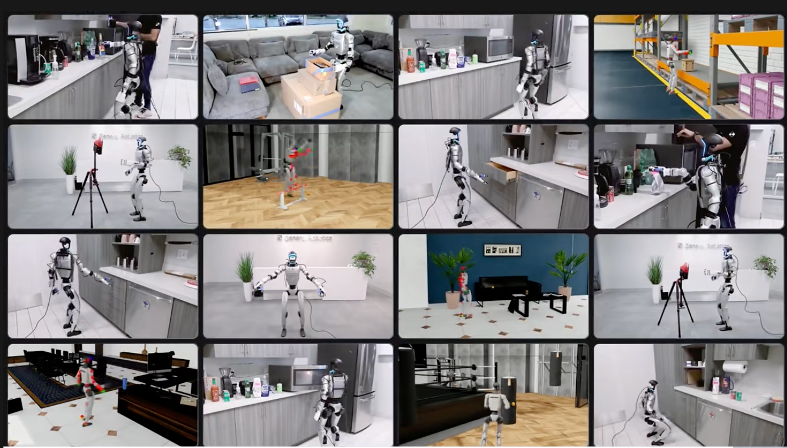

🤖 Behavior Foundation Model for Humanoid Robots
휴머노이드 로봇 분야에서 주목할 만한 최신 연구 두 편을 소개합니다.
AI와 로봇 기술이 어떻게 결합되어 실용적인 로봇 제어로 발전하고 있는지를 보여주는 획기적인 연구입니다.
📌 논문 1: BFM4Humanoid (Behavior Foundation Model for Humanoids)
- 🔗 공식 페이지
- 📜 논문 링크 (arXiv) 
🌟 핵심 기여
- 통합 행동 제어 모델(BFM)을 통해 하나의 모델로 다양한 휴머노이드 작업 수행 가능
- 걷기, 물건 잡기, 균형 잡기 등 기존에 개별 설계되던 작업을 단일 모델로 통합
- → "로봇 제어의 GPT"와 같은 역할을 목표로 함 
💡 주요 특징
- 전신 제어 관점 (Whole-Body Control, WBC) 에 기반
- 여러 작업을 하나의 학습된 행동 공간에서 처리
- 단일한 모델로 다양한 태스크 수행 → 범용성 확보

✅ 왜 중요한가?
- 고객 입장: 더 똑똑하고 유연한 로봇 등장 가능성
- 연구자 입장: 단일 작업 데모를 넘어서 실제 제품화 가능한 제어 기술로 진화
📌 논문 2: DreamControl – 생성형 모델 기반 로봇 제어 (Generative Model Driven Humanoid Control)
🌟 핵심 기여
- Diffusion 모델 + 강화학습(RL)을 결합한 로봇 행동 학습 방식
- 전체 훈련은 시뮬레이션에서 수행 → 실제 휴머노이드 로봇(G1)에서 성공적으로 적용
💡 주요 특징
- 인간과 유사한 자연스러운 동작 학습
- 다양한 고난도 작업 수행:
- 문 열기
- 물건 잡기
- 양팔 협업
- 점프, 킥 등
- 클라우드 + 엣지 하이브리드 인프라로 실시간 제어 구현 
✅ 주요 의의
- 생성형 AI 기반 로봇 제어의 가능성 실증
- 시뮬레이션 → 실제 로봇 전이(Sim2Real)의 성공 사례
🔑 핵심 요약:
Diffusion + RL → 자연스러운 로봇 스킬 학습
🔑 정리 및 공유 포인트
📍 메인 포커스
BFM4Humanoid는 범용 로봇 제어를 위한 획기적인 프레임워크입니다.- GPT가 텍스트를 혁신한 것처럼, BFM은 로봇 행동 제어의 패러다임 전환을 이끕니다.
📍 보조 포커스
DreamControl은 최신 생성형 AI 기술을 실제 로봇 제어에 성공적으로 적용한 사례입니다.- 기술적 실현 가능성을 넘어서 제품화에 가까운 성과를 보여줍니다.